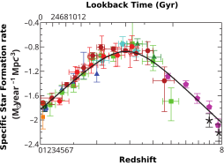
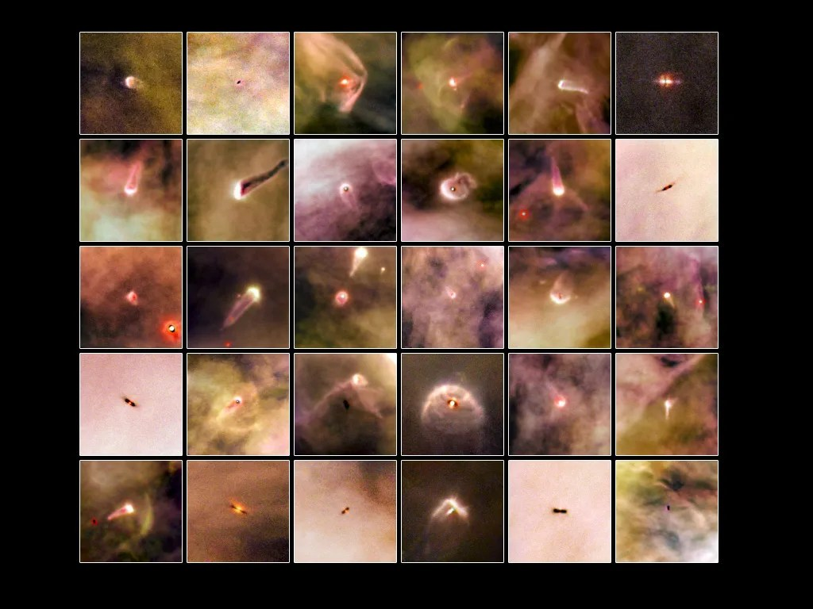
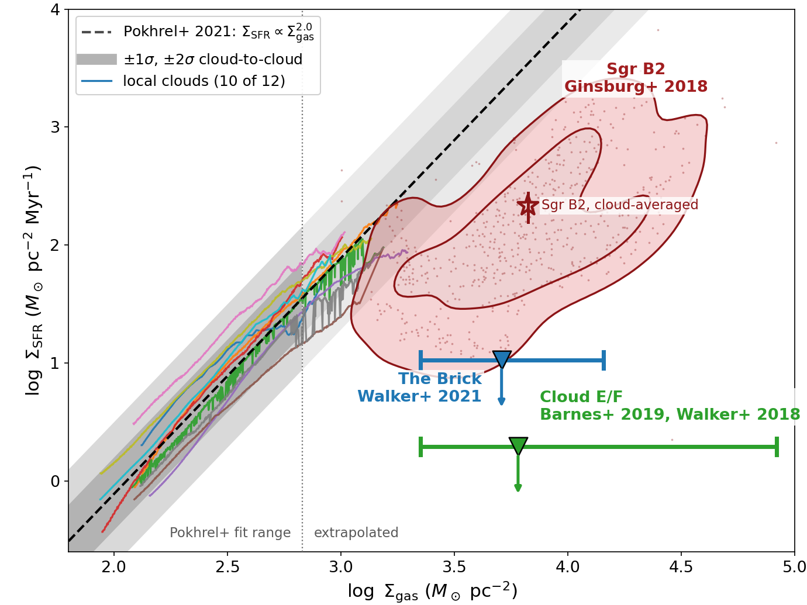
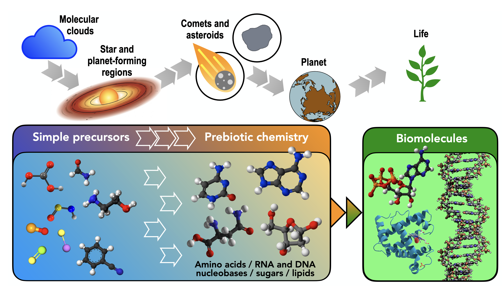
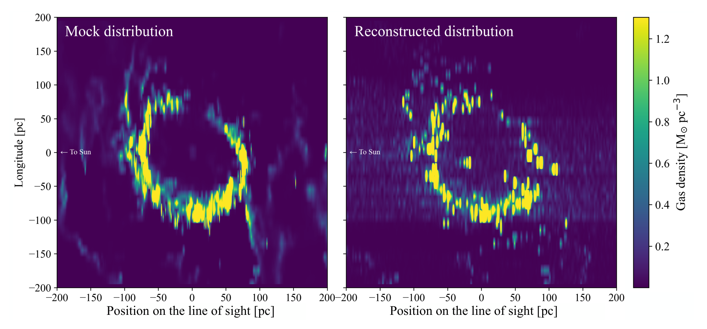
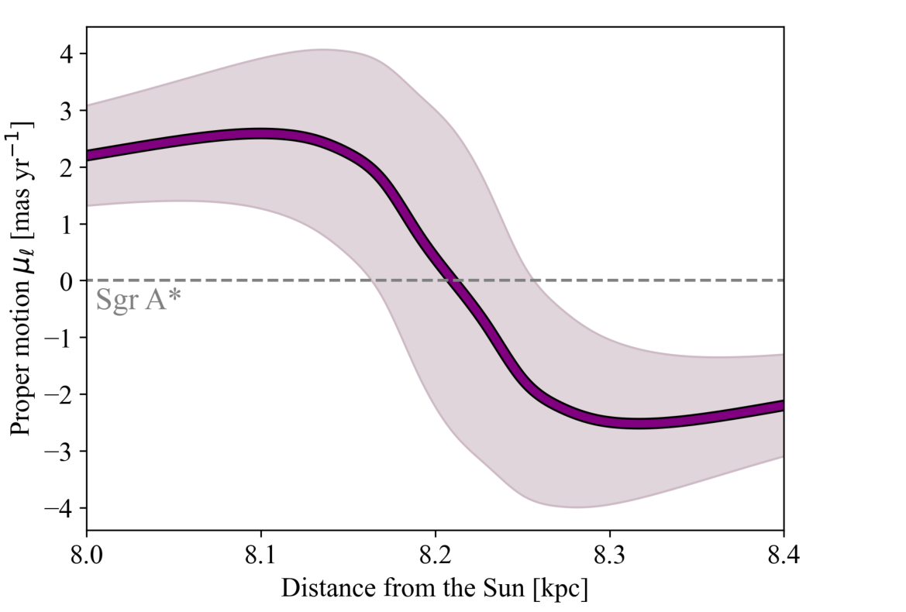

PLACEHOLDER — NOT PART OF THE TALK
With JWST, ALMA and the VLA we can now resolve individual forming stars, their outflows and
even their ice chemistry across the Milky Way’s Central Molecular Zone — and the
clouds there turn out not to be alike.
That census still covers only a small fraction of the CMZ; the JWST Treasury survey and Roman
will finish it and, for the first time, place these clouds in three dimensions.
What the audience will actually hear, read off the slide order — see the comment above for where this differs from the intended narrative.
- To move slides, use the arrow keys or swipe on your mobile device
- To see the speaker notes, press "s"
- To go to full screen, press "f"
- To print as PDF, go to this URL: ?print-pdf, then print.
- To get a PDF with speaker notes, add ?print-pdf&showNotes=true to the URL.
What sets star and planet formation in the Galaxy’s richest environments across cosmic time
- Postdocs: Nazar Budaiev (2026-), Theo Richardson (2025-2026), Miriam Garcia Santa Maria (2024-2025), Allison Towner (2020-2023)
- PhD: Desmond Jeff (2025), Theo Richardson (2025), Alyssa Bulatek (2026), Nazar Budaiev (2026), Savannah Gramze (2027), Taehwa Yoo (2028)
- Undergrad/postbac: Derod Deal, Aden Dawson, Ethan Bhula, Mario Antonio Daley, Prashant Sikhdar, Avery Lacon, Laya Damaraju
- Supported by NSF 2008101, 2206511, CAREER 2142300, STSCI 1905, 2221, 3523, 5365, 6151, 10662, 10678, Roman 19008, 19012, Astropy
Slides available at
https://keflavich.github.io/talks/colloquium_sep2026_granada.html or from my webpage →talks
- Part 1: We see star formation in the CMZ, but it's different.
- Part 2: CMZ clouds are icier and dustier
- Part 3: Future: JWST-GC, Roman



?
What happens to
proto-stellar discs
in these extreme
environments?
proto-stellar discs
in these extreme
environments?

Proplyds: discs photoevaporated
HST / Orion (NASA, ESA)
HST / Orion (NASA, ESA)

Madau & Dickinson 2014
The CMZ
$\sim10^8$ M$_\odot$ of gas in $\sim200$ pc, 10% of Galactic star formation
$>\frac{1}{3}$ of CMZ SF is in bound clusters (3-8$\times$ local)

$\sim$50% of CMZ SF occurs in the Sgr B2 cloud.
The Central Molecular Zone of the Galaxy represents one extreme of star forming conditions in the Galaxy


Sgr B2 with JWST/
NIRCam
MIRI
on MEERKAT: Ionized gas shows layers of the cloud

MIRI reveals deeply embedded gas

MIRI 25 micron shows the outflow:
first IR light from within Sgr B2 N;
$\dot{M} \sim 10^{-1} \mathrm{M}_\odot \mathrm{~yr}^{-1}$, $M_{cl} \sim 10^4 \mathrm{M}_\odot$
first IR light from within Sgr B2 N;
$\dot{M} \sim 10^{-1} \mathrm{M}_\odot \mathrm{~yr}^{-1}$, $M_{cl} \sim 10^4 \mathrm{M}_\odot$

Sgr B2 N Accretion + Outflow


Massive clusters account for 40-50% of the star formation
A dark, dusty swath hides ongoing unclustered SF


Three sites of star formation
Sgr B2 Deep South — a triplet driving an outflow


NIRCam starless F480M Brα Paα
ALMA 1.3 mm continuum
contour: ALMA SiO 5–4 — outflows - bit of a mess
Sgr B2 Deep South — Bipolar flow; 5$\mu$m from the cavity?


NIRCam starless F480MBrα Paα
ALMA 1.3 mm continuum
contour: ALMA SiO 5–4 — outflow traces back to the mm source cleanly
Sgr B2 Deep South — DS9, a hot core, along a thin filament


NIRCam starless F480MBrα Paα
ALMA 1.3 mm continuum
contour: ALMA SiO 5–4 — show a cluster of outflows
Sgr B2 with JWST/MIRI: where is the star formation?


◯ JWST 4.8μm excess sources (Budaiev+ 2026)
■ ALMA 3 mm continuum sources (Ginsburg+ 2018)

━ JWST 4.8μm excess source density
There is an overall asymmetry in the star formation seen both in JWST (HII regions) and ALMA (embedded YSOs)
JWST shows the transition is sharp


What ALMA sees, JWST doesn't: 3/700 point source matches
(HII regions, outflow cavities do match)
(HII regions, outflow cavities do match)
- Star formation is ongoing
- infrared SF tracers are separated from mm
- asymmetry hints at an ongoing compression event

Zooming back out to the Galactic Center as seen by ACES....


JWST has observed much of the Galactic Center

The Galactic Center in the mid-infrared (Spitzer/GLIMPSE)
…and in the radio
…with ACES + MUSTANG on top
What JWST has observed so far

Sgr B2: >500 YSOs w/ALMA
~100 HII regions JWST+ALMA+VLA
~100 HII regions JWST+ALMA+VLA
Ginsburg+ 2018, Jeff+ 2024, Budaiev+ 2024, 2025, 2026, Daley+ in prep


Cloud E/F: 1? YSO
Houghton, Esteve, Gutermuth, Longmore, Huard, Kauffmann subm.


Clouds C & D: one small “cluster” of 5–10 YSOs each
Gramze+ in prep


The Brick: about 10 YSOs, one above 5 M$_\odot$
Walker+ 2021


Quintuplet & Arches: few-Myr old, >10$^4$ M$_\odot$ clusters
Hosek+ 2019


Sgr C: ~5 IR–ALMA matched YSOs,
~40 inferred from outflows
~40 inferred from outflows
Crowe+ 2023, Lu+ 2021


Star formation in the CMZ does not follow the local relation

JWST has observed the CMZ dust ridge

The Galactic Center Dust ridge as seen by JWST

...has a foreground cloud in front
The Dust ridge: Cloud A (brick), C, D


D
C
A
Gramze+ (subm 2026)
Cloud D

Ice is everywhere
But it's different between clouds
3 kpc filament

Brick Head

Gramze+ (subm 2026)

Gramze+ (subm 2026)
Slope changes imply chemical differences between clouds within the CMZ
CO/Water ratio?
OCN− / Ammonium salt abundance?
TBD: Ashby+ NIRSPEC 6927


Gramze+ (subm 2026)
We know stars are forming in the CMZ, but we've measured only a small portion
The JWST Galactic Center Treasury Survey (GO 10678) — NIRCam
- Stellar populations: star formation history
- Extinction maps: where is the gas?
- YSO candidates

■ JWST NIRCam (GO 10678)
…and the same survey with MIRI
- YSO candidates
- PAH feedback maps

■ JWST MIRI (GO 10678)
Roman covers the CMZ & more
- Astrometry!
- Variability!
- $\rightarrow$ 3D tomography


□ Roman GC hourly-cadence □ Roman GBTDS PA 90.6° (spring window)
The cometary hypothesis: the molecules for life are built in the cloud

Complex organics form on icy grains in cold molecular clouds
…and survive the collapse into the protoplanetary disc
…where they are locked into comets and asteroids
…which deliver them, already made, to a young planet
Figure: V. M. Rivilla
…but the first link is not the same in every cloud
Ice is everywhere in the CMZ — but its composition is not the same from cloud to cloud.
Different CO/H2O, different OCN−: a different mix of simple precursors goes into the disc.
If the CMZ is our local stand-in for cosmic-noon conditions, then the inventory delivered to planets there is not the Solar-neighbourhood one.
Gramze+ (subm 2026)
Figure: V. M. Rivilla
Why Roman: proper motions give us the third dimension

We see the CMZ in projection.
Orbital models disagree about what is in front of what — and the gas kinematics alone cannot settle it.
Orbital models disagree about what is in front of what — and the gas kinematics alone cannot settle it.
Roman GO 19008 (Ginsburg+) — CMZ FUZ
Extinction rises with distance — except where clouds intervene

- AV to each star is a running total along the line of sight
- A cloud imprints a step in AV at its distance
- Map enough stars and you can invert AV → d
Roman GO 19008 (Ginsburg+) — CMZ FUZ
Cloud location inversion: ~10 pc resolution along the line of sight

~104 stars → ~10 pc accuracy.
Observed density ~500 stars pc−2 at mK<19 gives ~10–20 pc — vs ~100 pc today.
Observed density ~500 stars pc−2 at mK<19 gives ~10–20 pc — vs ~100 pc today.
Roman GO 19008 (Ginsburg+) — CMZ FUZ
Feasible in the first two seasons, with archival first epochs
- Roman – HST (Paα): ~0.1 mas/yr, Δt ~ 19 yr
- Roman – GALACTICNUCLEUS: ~0.3 mas/yr, Δt ~ 5–12 yr
- Roman – VVV: ~0.5 mas/yr, Δt ~ 17 yr
- Roman – JWST (GO 10678): ~0.5–1 mas/yr, Δt ~ 2–5 yr
- Archival epochs give coarse (~50 pc) tomography immediately; Roman-internal PMs reach the ~10 pc goal by season two

Roman GO 19008 (Ginsburg+) — CMZ FUZ
The method exists, and it works on mock data


The nuclear stellar disc rotates: near side toward positive longitude, far side toward negative — a
~5 mas/yr difference against ~1 mas/yr scatter. A proper motion therefore places a star on the near or
the far side, and its extinction measures the dust in front of it.
Proper motions + extinctions → a non-parametric 3D dust map, with no orbital model assumed.
~100 stars per 10×10 pc beam → 20 pc resolution; ≳1000 → 4–8 pc.
GALACTICNUCLEUS+HST already gives ~25 stars pc−2, VIRAC2 ~50, JWST GO 10678 ~150 after one epoch and ~1500 after two.
Vasini, Sormani, Sanders, Ginsburg, Battersby+ 2026 (arXiv:2609.10782)
In a simulation we know the answer — on the sky we only ever see the projection
Dani Lipman (Battersby group) — inner-Galaxy simulation, gas colour-tagged by its true 3D position: face-on (top left), as we see it on the sky (bottom left), and in l–v (right)
JWST has found new HII regions:
the SFR is higher than estimated from radio
the SFR is higher than estimated from radio
(remember Sgr B2 already accounts for $\sim$50% of the CMZ SFR)

R=770
G=(480-[410-405])
B=Brα
G=(480-[410-405])
B=Brα
■ New HII regions